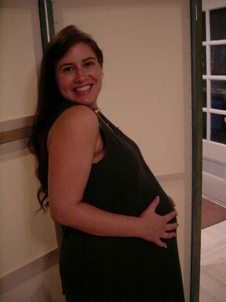
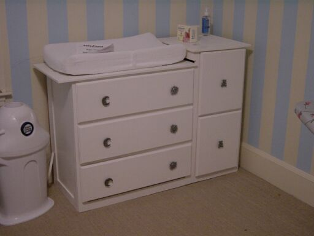

|
Home Us Pascale Graham Thornbush Family & Friends SeaMaster Wedding France 2001 Lockie's Art What's New |
What's New A New Addition on the Way Well, in case you haven't heard, Puddin's preggers. That's right, against all better judgement, we've decided to make a little copy of ourselves. If everything goes as planned, we'll add a 3rd Hunter to the clan sometime in late October or early November. The doctors have named November 2 as the official date. But, as you all probably know, they don't know squat. We've been working frantically to improve ourselves and our surroundings to accommodate the little tike. In that vein, we recently completed a birthing and child care class. We even got a certificate with a gold start, so we must be ready, right? As you can see, Puddin has been doing her part to make a cozy home for LBL (Little Blue Line - after our first indication of his/her existance). After a marathon bout of morning (more aptly named all-day) sickness, she's been holding up incredibly well. There's no way she'd be slowed by a little thing like another person growing inside her. Now, for most of you out there who have at least a rudimentary understanding of the human reproductive process, you know that for these past 9 months, there hasn't been much that Tater can add to the process. Pretty much, his role has been to perform the mundane duties that Puddin's arms and legs used to handle. But, this was not enough for young Tater. He decided to test out the handy genes that had surely been handed down from his father. Thus came into being the interminable Changing Table Fiasco. Armed with cursory plans from the internet and a full 90 seconds of 8th grade wood shop training, Tater began constructing a cute little bit of furniture. So, after 4 months of evenings and weekends, well-placed guidance from a Cousin/Craftsman and much gnashing of teeth, our nursery is home to a brand new, handmade, pine combo-style changing table. Whew! |
© TaterCo: We've got eyes for your business